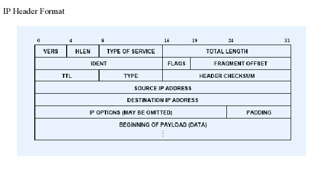
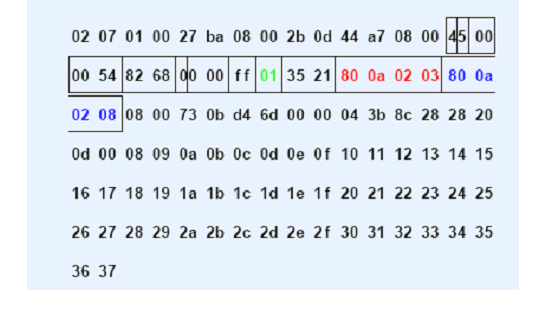
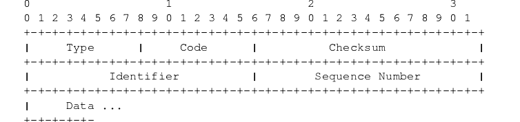
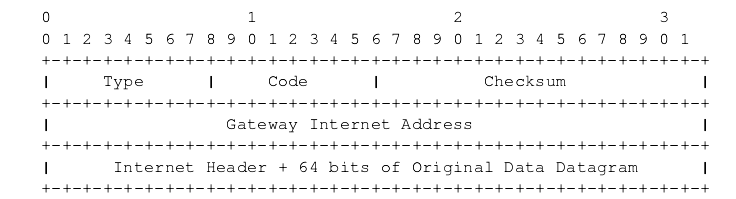

IP/ICMP Security
KING
Jun 23, 2017
Jun 23, 2017 UPDATED
Overview：
- Introduction of IP and ICMP
- Potential Attacks due to vulnerabilities in IP and ICMP
- Introduction to a sniffer program
IP Protocol
Connectionless Delivery System
- Unreliable: packets may be lost, duplicated, delayed or out of order
- Connectionless: each packet is treated independently from all others
- Best effort: tries its best
Purpose of IP
Define the basic unit of data transfer
Performs routing function
Include rules about unreliable packet delivery:
- How hosts and routers should process packets;
- How and when error messages should be generated;
- The conditions under which packets can be discarded
IP Header
In Chinese:ip包格式说明

- Vers:
Current IP version, IPv4
IPv6 will have a different header - HLEN: header length in 32-bit words
normally 5, i.e. 20 bytes
Max 60 bytes
Header can be variable length (IP option) - TOS (3 bit unused, 4 TOS bits, 1 unused)
1, min delay, 0x10; 2, max throughput, 0x08; 3, max reliability, 0x40; 4, min cost, 0x20;
Only one bit can be set - Total Length: of datagram, in bytes
Max size is 65535 - IDENT, FLAGS, FRAGMENT OFFSET:
Used for fragmentation and reassembly, will talk about this later - TTL (Time To Live): upper limit on # routers that a datagram may pass through
Initialized by sender, and decremented by each router. When zero, discard datagram. This can stop routing loops
Example: ping –t TTL IP allows us to specify the TTL field
Question: non-root users are not supposed to be able to modify the TTL field, how does ping do that? - TYPE: IP needs to know to what protocol it should hand the received IP datagram
1, ICMP; 2 IGMP; 6 TCP; 17 UDP; - HEADER CHECKSUM 16-bit 1’s complement checksum
Calculated only over header , Recomputed at each hop
An example of IP datagram1
2
3
4Header length: 20 octet
TYPE: 01 (ICMP)
Source IP: 128.10.2.3
Destination IP: 128.10.2.8

IP OPTIONS
- IP OPTIONS field is not required in every datagram Options are included primarily for network testing or debugging. The length of IP OPTIONS field varies depending on which options are selected.
- Record Route Option The sender allocates space in the option to hold IP addresses of the routers (i.e., an empty list is included in the option field) Each router records its IP address to the record route list; If the list is full, router will stop adding to the list
- Timestamp option; Source route option;
IP Fragmentation
- Why do we need fragmentation?
- MTU: Maximum Transmission Unit
- An IP datagram can contain up to 65535 total octets (including header)
- Network hardware limits maximum size of frame (e.g., Ethernet limited to 1500 octets, i.e.,MTU=1500; FDDI limited to approximately 4470 octets/frame)
- IP fragmentation
- IP layers divide an IP datagram into several smaller fragments based on MTU
- Fragment uses same header format as datagram
- Each fragment is routed independently
- How is an IP datagram fragmented?
- How to fragment an IP datagram?
- IDENT: unique number to identify an IP datagram; fragments with the same identifier belong to the same IP datagram
- FRAGMENT OFFSET: Specifies where data belongs in the original datagram (dividable by 8 octets )
- FLAGS:
bit 0: reserved
bit 1: do not fragment
bit 2: more fragments. This bit is turned off in the last fragment (Q: why do we need this bit?)
- How are IP fragments reassembled?
- All the IP fragments of a datagram will be assembled before the datagram is delivered to the layers above.
- Where should they be assembled? At routers or the destination?
They are assembled at the destination.
IP reassembly uses a timer. If timer expires and there are still missing fragments, all the fragments will be discarded.
Attacks against IP
- Attack 1: Denial of Service Attack
- 1st fragment: offset = 0
- 2nd fragment: offset = 64800
- Result: The target machine will allocate 64 kilobytes of memory, which is typically held for 15 to 255 seconds. Windows 2000, XP, and almost all versions of Unix are vulnerable.
- Attack 2: TearDrop
- First packet : offset = 0 payload size N More Fragments bit on
- Second packet: More Fragments bit off offset + payload size < N
- i.e., the 2 fragment fits entirely inside the first one.
- When OS tries to put these two fragments together, it crashes.
- Attack 3: Overlapping attacks against firewalls
- Many firewalls inspect each packet (fragment) separately.
- FO==0, filter; otherwise, pass without filter
- When filtering rule based on TCP header, but the TCP header is fragmented, the rule will fail
- TCP header is at the beginning of the data area of an IP packet.
- Firewalls often check TCP header: for example, SYN packet for connection request.
Tiny Fragment Attack: Assumption: firewalls only check the packets with offset=0.
Overlapping attacks: Assumption: firewalls only check the packets with offset=0.
Tiny Fragment Attack
- RFC 791 : datagram with length 68 should not fragment anymore; IP header would be 60; and a minimum fragment is 8 bytes
- However, 8 bytes only include TCP Sport and DPort
- Prevention Methods
If FO == 0 and Protocol = TCP and TRANSPORTLEN < tmin, then drop packet
If FO ==1, then drop packet
Overlapping Fragment Attack
- A filter is to drop TCP connection request packets
First fragment comes with SYN=1, ACK=1;
Second fragment’s FO == 1, and with SYN=1, ACK = 0; - Prevention method
If FO == 1 and Protocol == TCP then Drop packet;
ICMP Protocol and Its Security
- Motivation
IP may fail to deliver datagrams because- the destination is not available
- the time-to-live counter expires
- routers become congested
We need to let the sender know what has happened
- Purpose
ICMP allows routers (and hosts) to send error or control messages to other routers or hosts
ICMP provides communication between the Internet Protocol software on one machine and the Internet Protocol software on another - ICMP messages are not generated for errors that result from datagrams carrying ICMP error messages. Why?
- ICMP is only sent to the original source. Why?
- The Common ICMP header
- Each ICMP message has its own format, they all begin with the same three fields
- TYPE(8-bit): identifies the message
- CODE(8-bit): provides further information about the message type
- CHECKSUM(16-bit)
- In addition, ICMP messages that report errors always include the header and the first 64 data bits of the datagram causing the problem.
- ICMP Message TYPE
0:Echo Reply
3:Destination Unreachable
4:Source Quency
5:Redirect (chagearoute)
8:Echo Request
9:Router Advertisement
10:Router Solicitation
11:time Exceeded for a Datagram
12:Parameter Problem on aDatagram
13:timestamp Request
14:Timestamp Reply
17:Address Mask Request
18:Address Mask Reply
ICMP Packets
Echo request and reply message (TYPE=8 and TYPE=0)
- Used to test reachability
- The format of echo request/reply packets is the following:

ICMP Route Redirect
- Format of ICMP route redirect message:

- Routers exchange routing information periodically to accommodate network changes and keep their routes up-to-date; but hosts don’t do this.
- A general rule:
Routers are assumed to know correct routes; hosts begin with minimal routing information and learn new routes from routers - IP hosts typically only configured with an IP address of a default router; any traffic is forwarded to the default IP router
- When a router detects a host using a nonoptimal route, it sends the host ICMP redirect message; requesting host change its route
- An example:
Gateway G1, receives an Internet datagram from a host ;
G1 checks its routing table and obtains the address of the next gateway, G2, the next hop on the route of the packet;
However, if G2 and the host are on the same network, a redirect message is sent to the host
Attacks Using ICMP Messages
Mapping Network Topology
- For an attack on a network, mapping is the first step
- Sending individual ICMP echo: this is ping command
- Sending ICMP echo request to the network and broadcast address of a network
Smurf Attacks
- Ping an IP-directed broadcast address, with the (spoofed) IP of a victim as the source address.
- Until 1999,standad required routers to forward such packets.
- Impact: All hosts on the network will respond to the victim, and thus overwhelm the victim.
- This is a denial-of-service attack.
- The key idea of this attack: Amplification and IP spoofing
- This is a protocol vulnerability. To solve this problem, we can do the following:*
Disable IP-directed broadcasts at the router.
Configure the operating system to prevent the machine from responding to ICMP packets sent to IP broadcast addresses.
Ping of Death
- ICMP echo request with fragmented packets
- Maximum legal size of an ICMP echo request packet:
65536 - 20- 8 = 65507 - Fragmentation allows the bypass of the maximum size. For the last piece of the fragment, the following is possible: (offset + size) >65535
- Impact: some operating systems will crash
- Same attack with different IP protocol
ICMP Redirect Attack
- Send an ICMP redirect packet to the victim, asking it to send its packet to another “router”
- Impact: man-in-the-middle attacks or DOS attacks
- RFC states that system must follow redirect unless it is a router
- Winfreez(e): in windows,
ICMP Redirect: Yourself is the quickest link to Z
The victim changes its routing table
Host sends packets to itself in an infinite loop
A SMALL SNIFFER
Programming with Pcap
- To capture packets using Pcap:
To specify the interface to sniff on;
Initialize pcap
To specify a filter and compile it
Tell pcap to enter a loop;
Close pcap;
- Pcap: get default interface
- Initialize a Pcap
- Create a filter
- Enter a Loop
- Close a pcap
1 |
|